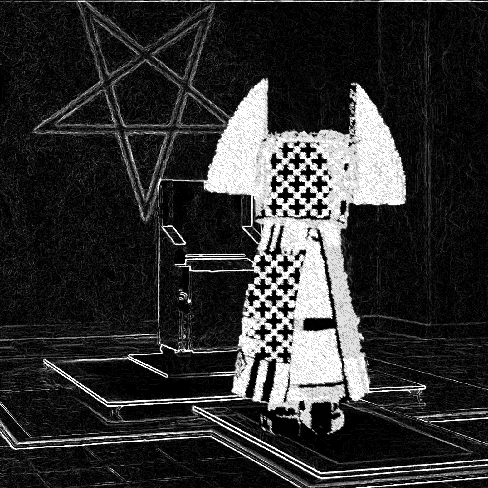

|
Neronomicon 
DOWNLOAD
01: Neronomicon
02: Ⲇᘶᇫদ [Hallogallo Mix]
Lyrics, main vox, and production by MC Vox Nihili.
Composition, backing vox, and production by Jack Levin.
Neronomicon
Deep, deep deep steeped in a gold abyss
Serpentine minds clench currents in a soldered fist
Fiddling over scorching flames that the city’s on
Diamond cluster seized in a bloated pyramidion
Ornate gourmet; Thrones made of bones
Shown to the low to keep a hold on their domes
An envious wrath: A plague to the rats
A play to a mass to be slain over scraps
Drained of a will, souls bilked to dust
Overlords turn all that is touched into rust
Meddled zeitgeist to recalibrated disgrace
Wooden and hollowed out; Fresh for a grift’s taste
Hapahzardous waste on a pedestaled foray
What plastic is not in the ocean is for display
Charades digitized or from under a knife
Diffidence storms in synthesized forms
Cascades in the eyes with a thunderous might
Dipped in the norms of fictitious swarms
ALL CONTENT ON THIS WEBPAGE IS LICENSED UNDER CC BY-SA 4.0
|